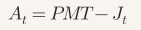
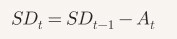
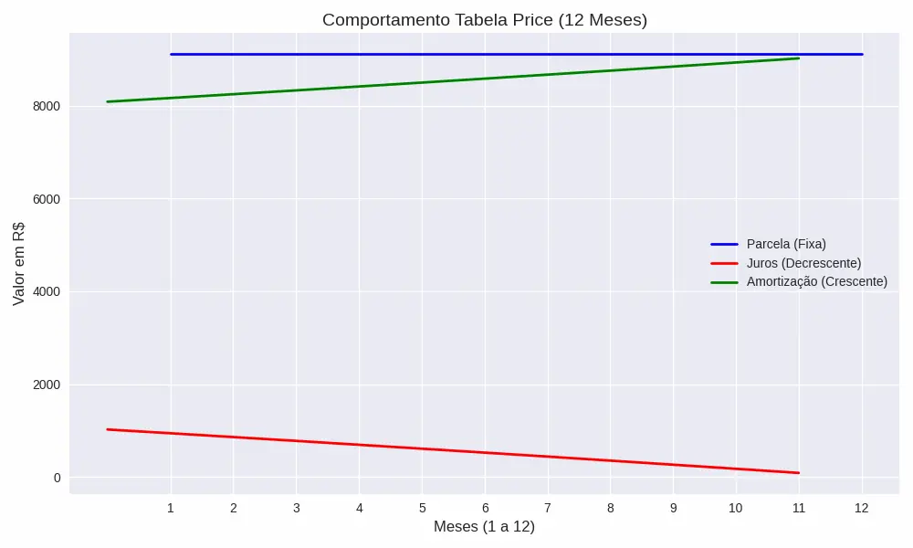

Introdução: A Herança de Richard Price no Crédito Moderno
Como perito judicial e especialista em finanças, frequentemente me deparo com dúvidas sobre o porquê de uma dívida parecer não diminuir nos primeiros meses de um financiamento. A resposta reside quase sempre na Tabela Price, também conhecida como Sistema Francês de Amortização.
Desenvolvido pelo clérigo e matemático britânico Richard Price no século XVIII, este sistema foi inicialmente concebido para cálculos de pensões e seguros de vida. Contudo, sua aplicação na engenharia financeira transformou-o no padrão global para o crédito ao consumidor, cartões de crédito e, majoritariamente, no financiamento de veículos. A sua popularidade decorre de um fator psicológico e comercial: a previsibilidade. O devedor sabe exatamente quanto pagará do início ao fim, facilitando o planejamento do orçamento familiar ou empresarial.
Richard Price: O Arquiteto da Previdência e o Visionário do Crédito Moderno
Richard Price foi uma das mentes mais brilhantes e multifacetadas do século XVIII, e seu impacto no mercado financeiro moderno é tão profundo quanto, muitas vezes, subestimado. Vamos resgatar a trajetória deste intelectual galês e explicar por que ele é considerado o "pai" da ciência atuarial moderna.
Embora o nome "Tabela Price" ecoe diariamente em contratos bancários e imobiliários, a figura por trás do termo, Richard Price (1723–1791), transcende o universo da amortização. Filósofo, teólogo, matemático e conselheiro político, Price foi um polímata cuja obsessão pela precisão estatística moldou os pilares do que hoje conhecemos como gestão de risco, seguros e finanças públicas.
A Vida e a Formação Intelectual
Nascido em Glamorgan, Gales, Price era um ministro dissidente da Igreja Presbiteriana. Essa base filosófica e ética foi crucial para sua obra: ele acreditava que a matemática poderia ser usada para o bem social, garantindo segurança financeira para as famílias através da previdência e do seguro de vida. Sua casa em Newington Green, Londres, tornou-se um ponto de encontro para figuras como Benjamin Franklin, Thomas Jefferson e Adam Smith.
Feitos e Realizações: Da Probabilidade à Amortização
O legado de Price no mercado financeiro está ancorado em três grandes pilares:
- Ciência Atuarial e Seguros:Antes de Price, os planos de seguro de vida e pensões eram baseados em estimativas rudes e frequentemente faliam. Em 1771, ele publicou Observations on Reversionary Payments, obra que revolucionou o setor. Ele desenvolveu as "Tabelas de Mortalidade de Northampton", as primeiras tabelas científicas usadas para calcular prêmios de seguros de vida com base na probabilidade real de morte por faixa etária.
- O Sistema Francês de Amortização (Tabela Price): Price aplicou o conceito de juros compostos para criar um sistema onde as parcelas de um empréstimo são constantes. Ao estruturar uma fórmula onde os juros são calculados sobre o saldo devedor e a amortização é crescente, ele permitiu que o tomador de crédito tivesse previsibilidade absoluta sobre seu fluxo de caixa — uma inovação que permitiu a expansão do crédito bancário para a classe média e para o financiamento de longo prazo.
- Finanças Públicas e o "Sinking Fund": Price foi o grande mentor do sistema de fundo de amortização da dívida pública britânica. Ele convenceu o governo de que, ao reinvestir os juros de um fundo específico, o poder dos juros compostos poderia liquidar dívidas nacionais colossais.
Curiosidades e Conexões Históricas
- Influência na Revolução Americana: Price foi um fervoroso apoiador da independência dos Estados Unidos. Em 1776, publicou um panfleto sobre a liberdade civil que foi tão influente que o Congresso Americano chegou a convidá-lo para gerir as finanças da jovem nação — convite que ele recusou devido à idade avançada.
- O Teorema de Bayes:Foi Richard Price quem editou e publicou postumamente os trabalhos de seu amigo Thomas Bayes. Sem o esforço de Price em reconhecer a importância da "probabilidade condicional", a estatística bayesiana — base da Inteligência Artificial e da Ciência de Dados atual — poderia ter sido perdida.
Menções e Reconhecimento
- Fellow of the Royal Society (1765): Recebeu a maior honra científica da época por suas contribuições matemáticas.
- Doutorado Honorário em Yale e Glasgow: Reconhecido internacionalmente por sua influência na economia política e na filosofia moral.
- O Legado Permanente: No mercado financeiro contemporâneo, Richard Price é reverenciado como o homem que transformou o risco em algo calculável, permitindo a existência de fundos de pensão estáveis e do crédito imobiliário acessível.
A Mecânica do Cálculo: A Dança das Variáveis
A essência da Tabela Price é a manutenção de prestações iguais (PMT) durante todo o prazo contratado. No entanto, o que muitos ignoram é que a "anatomia" dessa parcela sofre uma mutação constante a cada mês.
- Juros: São calculados sempre sobre o saldo devedor do mês anterior. Como o saldo é maior no início, os juros consomem a maior parte da parcela nas primeiras prestações.
- Amortização: É o que sobra da parcela após o pagamento dos juros. No início, sobra pouco; conforme o saldo devedor cai, os juros diminuem e a amortização ganha força (comportamento crescente).
As Fórmulas Fundamentais
Para uma auditoria pericial rigorosa, utilizamos o seguinte conjunto de equações:
1. Cálculo da Parcela (PMT):

Onde PV é o Valor Total Financiado, i a taxa de juros e n o número de períodos.
2. Juros do Mês (Jt):

3. Amortização do Mês (At):
4. Saldo Devedor (SDt):
O OLHAR DO PERITO EM TI: Auditoria da Caixa-Preta do Price
Como especialista e profissional de TI por muitos anos, audito o código-fonte lógico das planilhas bancárias. O erro material raramente está no cálculo final da parcela, mas na transparência algorítmica da capitalização, que o log do sistema oculta do consumidor. Minha perícia desvenda essa progressão geométrica invisível para fundamentar a nulidade técnica do encargo.
Estudo de Caso Prático: Auditoria de um Financiamento de R$ 102.500,00
Vamos analisar um exemplo real, fundamentado em nossos algoritmos de auditoria, para demonstrar como a Price se comporta na prática.
Parâmetros do Contrato:
- Valor do Bem: R$ 120.000,00
- Entrada: R$ 20.000,00
- Principal (Líquido): R$ 100.000,00
- Despesas (TAC/IOF/Seguros): R$ 2.500,00
- Valor Total Financiado ($PV$): R$ 102.500,00
- Taxa Nominal: 1,00% a.m.
- Prazo: 12 meses
A Evolução do Fluxo (Primeiro Semestre):
Observando a planilha auditada, notamos a precisão matemática:
Análise do Perito: No mês 1, o juro de R$ 1.025,00 representa 11,2% da parcela. Já no mês 12, o juro cai para apenas R$ 90,17 (0,9% da parcela). É esta inversão que garante a quitação total ao final do prazo.
O Custo Oculto (CET)
Um dos pontos mais críticos revelados pela auditoria é a disparidade entre a taxa nominal e o custo real.
- Taxa Nominal vs. Real: Embora o contrato cite 1,00% a.m., o fato de o banco calcular juros sobre R$ 102.500,00 (enquanto o cliente recebe apenas R$ 100.000,00) eleva o Custo Efetivo Total (CET) para 1,392996% a.m..
- Acurácia Matemática: A parcela técnica exata para este financiamento seria R$ 9.107,00084. O uso de R$ 9.107,00 redondo demonstra que a taxa de 1% foi aplicada com precisão para zerar o saldo no 12º mês.
- Comportamento de Amortização: No primeiro mês, os juros representam 11,2% da parcela (R$ 1.025,00). No último mês, esse valor cai para apenas R$ 90,17 (0,9%), evidenciando a inversão característica do sistema.
O "Ponto Cego" Pericial: Anatocismo e a Exponencialidade
Aqui entramos na zona de conflito judicial. A fórmula da Tabela Price utiliza juros compostos (exponenciais). No Direito Brasileiro, há discussões seculares sobre a legalidade do anatocismo (capitalização de juros).
O algoritmo da Price "embuti" juros sobre juros porque, tecnicamente, a taxa incide sobre um saldo que já foi remunerado anteriormente. Em perícias de "Ação Revisional", o foco costuma ser:
- A Divergência entre Taxa Nominal e Efetiva: No nosso exemplo, a taxa nominal é 1,00%, mas devido às despesas de R$ 2.500,00, o Custo Efetivo Total (CET) salta para 1,392996% a.m.
- O Erro de Algoritmo: Bancos frequentemente arredondam parcelas para cima. No nosso caso, a parcela técnica exata seria **R$ 9.107,00084**. Um arredondamento para R$ 9.108,00, por exemplo, geraria um lucro indevido ao longo de 48 ou 60 meses.
Gráfico de Comportamento: O "X" da Questão
Visualizar o comportamento da Price é fundamental para entender o risco de inadimplência precoce.
(Nota: No gráfico acima, as linhas de Juros e Amortização se cruzam. É o momento em que você passa a pagar mais "o bem" do que "o banco".)
O gráfico mostra exatamente o comportamento clássico da Tabela Price: parcela fixa, juros caindo e amortização crescendo ao longo dos 12 meses. A visualização ajuda muito a entender como o saldo devedor se reduz de forma acelerada ao longo do tempo.
Auditoria de Algoritmo: O Valor das Despesas
Um dos maiores trunfos de uma perícia bem-feita é a identificação do Capital Líquido vs. Capital Bruto.
No exemplo:
- O banco calcula a parcela sobre R$ 102.500,00.
- O consumidor usufrui apenas de R$ 100.000,00.
- Isso cria uma Taxa Implícita (TIR/CET) muito superior à nominal.
Se o banco informar que o CET é de 1,20% mas nossa auditoria apontar 1,39%, temos uma violação do dever de informação (Código de Defesa do Consumidor).
Vantagens e Desvantagens
Vantagens:
- Parcelas Acessíveis: No início, a parcela Price costuma ser menor que a do sistema SAC.
- Planejamento: Facilidade de saber o desembolso mensal fixo.
Desvantagens:
- Custo Total: Geralmente, paga-se mais juros totais na Price do que no SAC para a mesma taxa.
- Amortização Lenta: Se você precisar vender o bem no primeiro terço do contrato, descobrirá que o saldo devedor quase não baixou.
Conclusão: Quando a Price se torna abusiva?
Como perito, concluo que a Tabela Price não é abusiva em sua natureza matemática, mas sim em sua aplicação obscura. Ela se torna passível de revisão judicial quando:
- 1. A Taxa Real (CET) diverge drasticamente da anunciada.
- 2. Há capitalização mensal de juros sem previsão contratual expressa e clara.
- 3. Erros de Arredondamento no algoritmo do banco geram saldos residuais indevidos.
A auditoria prática demonstra que cada centavo conta. No nosso exemplo de R$ 102.500,00, a precisão da taxa de 1,00% garante um saldo zero ao fim de 12 meses. Qualquer desvio nessa engrenagem é o sinal verde para uma intervenção jurídica.
Quesitos para Prova de Anatocismo na Tabela Price
- Queira o Sr. Perito informar se o método de cálculo utilizado na Tabela Price deste contrato fundamenta-se em uma progressão geométrica, caracterizando a incidência de juros compostos (exponenciais) na formação das parcelas fixas?
- À luz do princípio da Transparência Algorítmica, queira o Sr. Perito demonstrar se o contrato detalha de forma clara a ocorrência de juros sobre juros antes da apuração do saldo devedor mensal, ou se tal fenômeno matemático ocorre de forma opaca ao consumidor?
- Pode o Sr. Perito confirmar se, nos primeiros meses do financiamento, a quota de juros absorve a quase totalidade da prestação, resultando em uma amortização negativa ou insuficiente que retarda a quitação do capital principal?
- Considerando a tese do Erro Material, queira o Sr. Perito auditar se o sistema bancário aplicou a taxa efetiva anual em conformidade com a taxa nominal pactuada, ou se houve divergência aritmética na parametrização do software de cálculos?
- Com base na análise técnica, queira o Sr. Perito apresentar o recálculo do débito utilizando o Método de Gauss (Juros Simples), apontando a diferença financeira (indébito) gerada pela substituição da capitalização composta pela linear?
FAQ Técnico: Anatocismo e Tabela Price
O STJ entende que a capitalização é permitida se pactuada (Súmula 539). Contudo, a tese de Erro Material e Omissão Algorítmica ataca a execução do cálculo: se o banco aplica juros compostos sem que o consumidor consiga identificar a progressão geométrica no contrato, há violação do dever de transparência, permitindo a revisão.
Isso ocorre devido à Amortização Negativa. Quando os juros mensais (exponenciais) são superiores ao valor da parcela, o excedente é incorporado ao saldo devedor. Como perito, identifico esse fenômeno para provar que o sistema Price, em certos cenários, torna a dívida impagável e fere o equilíbrio contratual.
Enquanto o contador foca no saldo final, a auditoria algorítmica foca no "motor de cálculo". Identifico se o software bancário utilizou truncamento ou arredondamento em favor da instituição e se a taxa efetiva anual praticada diverge da taxa nominal informada, configurando erro material sistêmico.
É a alternativa técnica mais robusta para substituir juros compostos por juros simples (lineares). A perícia apresenta o recálculo comparativo para demonstrar ao juiz o indébito gerado pela capitalização indevida, servindo como parâmetro real de liquidação de sentença.
Através da demonstração da verdade aritmética. A perícia decompõe a fórmula de Richard Price para expor a função exponencial oculta. Ao provar que a estrutura matemática é de juros sobre juros, retiramos a discussão do campo jurídico (opinião) e a trazemos para o campo científico (fato material).
Checklist: Tabela Price vs. Gauss
Não inicie sua petição sem entender a viabilidade técnica do caso. Identifique a presença de anatocismo e a aplicação indevida de taxas antes de protocolar.
Receber Checklist via E-mailO que você encontrará no Material Completo:
- ✅ Identificação de Anatocismo: Como provar a capitalização composta no Price.
- ✅ Transparência Algorítmica: O que questionar sobre o método de cálculo.
- ✅ Cálculos Comparativos: A base técnica para a substituição pelo Método de Gauss.
- ✅ Quesitos Estratégicos: Itens essenciais para a instrução em perícias bancárias.
Nota do Perito em TI: Como Doutor e Analista de Sistemas, audito os "motores de cálculo" bancários para transformar falhas algorítmicas em provas materiais incontestáveis.

Dr. Lincoln Sposito
Doutor em Administração e Perito Judicial. Especialista em auditoria bancária e perícia financeira, utiliza rigor estatístico e Data Science para identificar assimetrias informacionais e garantir o reequilíbrio de contratos de crédito complexos.